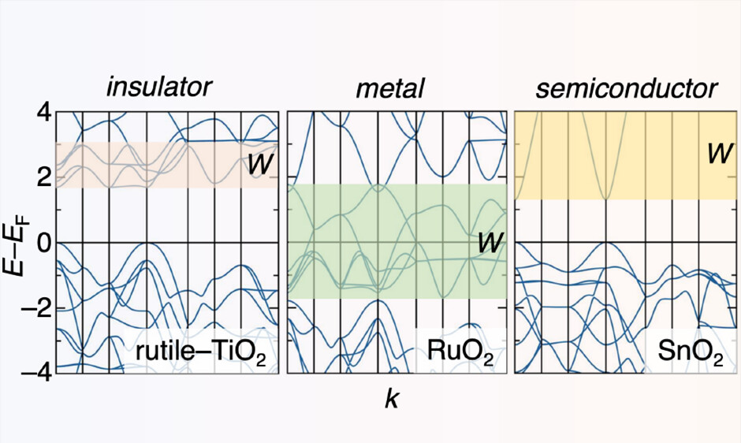
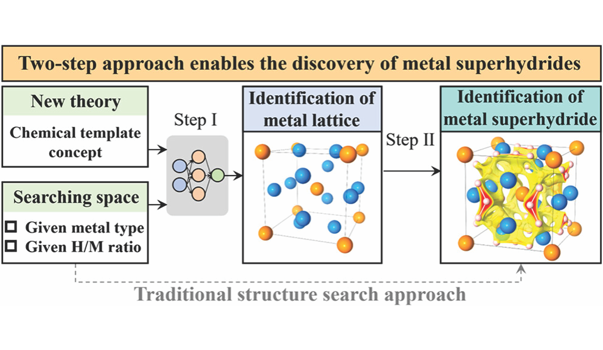

I am excited to lead this semester's first Chem/Biochem Journal Club meeting on February 20. We will
discuss
Metallic Oxides and the Overlooked Role of Bandwidth,
an engaging Chemistry of Materials paper connecting solid-state chemistry with electronic-structure
concepts. If you are curious and want to attend, please
reach out by email.

Thank you to the UCSB team for such a fascinating piece of research.
DCOMP Travel Award - Global Physics Summit 2026
I received a DCOMP travel award to attend the Global Physics Summit 2026 in Denver, Colorado. I will be
presenting my electron localization function (ELF) work that I first shared at NeurIPS AI4Mat.
GRC: Multifunctional Materials and Structures
In late January, I attended the Gordon Research Conference on Multifunctional Materials and Structures in
Ventura, California. I presented two posters: one on machine-learning-guided discovery of complex metal
superhydrides and one on symmetry-aware deep-learning prediction of electron localization functions. It was a
great chance to exchange ideas across disciplines and build new research connections.
CSUN Department News
Our lab's two most recent publications were featured on the CSUN Department of Science and Mathematics news
site: one highlighting our machine-learning-guided materials discovery work
(article link)
and another covering pressure-induced redox reversal of iron in deep-Earth conditions
(article link).

NeurIPS AI4Mat 2025
I received a travel grant to attend NeurIPS AI4Mat 2025 and presented two posters there. One shares our JACS
study on batch discovery of complex metal superhydrides and how template-guided ML accelerates the search for
high-pressure materials (PDF).
The other covers an in-progress symmetry-aware 3D-UNet that predicts electron localization functions from
superposed atomic density grids with promising early accuracy
(PDF).
CSUN Newsroom Feature
Our group's work on pressure-driven redox reversal of iron and its role in element distribution deep in Earth
was featured by CSUN Newsroom. The piece highlights how computational evidence for iron's redox reversal
points to new bonding pathways for p-block elements under extreme pressure and can reshape models of core
formation and evolution.
Read the story.